|
NYTimes Magazine - The Case For Contamination
I'm seated, with my mother, on a palace veranda, cooled by a breeze from the royal garden. Before us, on a dais, is an empty throne, its arms and legs embossed with polished brass, the back and seat covered in black-and-gold silk. In front of the steps to the dais, there are two columns of people, mostly men, facing one another, seated on carved wooden stools, the cloths they wear wrapped around their chests, leaving their shoulders bare.
| |
|
|
Rob Kay's Fiji Guide - Taveuni
Then there's Hollywood's interpretation of the island...
To see that, check out Reel Paradise, a movie about the saga of American film maker maker John Pierson who in 2002 relocated his family
to Taveuni for a year to show free movies at the venerable Meridian Cinema near Waiyevo.
| 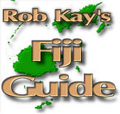 |
|
|
Interview with John and Janet Pierson - Reel Paradise
On the latest episode of DVD Talk Radio, DVD Talk Editor Geoffrey
Kleinman speaks with John and Janet Pierson about the DVD release for Reel Paradise.
| |
|
No Family Is an Island
BY SPENCER PARSONS
The Piersons on 'Reel Paradise'
| |
|
Reel Paradise: Review
BY Marc Savlov
When it comes to mid-life crises, some guys buy Porsches, some nail hot blondes,
and some just muddle through. Freshly minted Austinite and famed producer's rep/author/gadabout John Pierson chose to relocate his entire family.
| |
|
'Reel Paradise': Moving Theater Experience in Fiji
by Alex Chadwick
Day to Day, September 20, 2005
| |
|
Reel Paradise: Review
by Roger Ebert
Steve James' new documentary, "Reel Paradise," is about a couple with similar idealism, who also move to a small town and buy the movie theater.
| |
|
Movie review: 'Reel Paradise'
By Michael Phillips
The highly engaging documentary "Reel Paradise," edited and directed by Steve James of "Hoop Dreams" fame, begins as a diary of an American movie geek who decided to take on the role of sole movie theater programmer and raging imperialist eccentric on the Fijian island of Taveuni, regaling the Fiji islanders and Indo-Fijians with everything from "The Hot Chick" to "Steamboat Bill Jr." to "Jackass: The Movie."
| |
|
The Piersons' Road to Fiji
by Jonathan Marlow
Jonathan Marlow talks to John, Janet, Georgia and Wyatt Pierson about their adventure and the film that captures their story, Reel Paradise.
| |
|
Steve James: "The only honest way I can"
by Jonathan Marlow
Jonathan Marlow talks with James about how his latest, Reel Paradise, is unlike any film he's worked on before.
| |
|
Family way
By Ray Pride
Talking with Chicagoan Steve James about what's reel in "Paradise"
| |
|
Reel Paradise: Review
By Kevin Crust
MOVIE REVIEW: A family, a film house and Fiji.
| 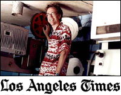 |
|
Taking popcorn fare to paradise
By Merrill Balassone
Whether it was a projectionist drunk on homemade grog or faulty wiring that made equipment go up in smoke, independent film producer John Pierson was in for a challenge when
he took over a rickety 288-seat movie theater on Fiji's remote island of Taveuni.
| |
|
How an American family moved to Fiji and brought Hollywood along for the ride
By Edward Guthmann
After 25 years of making top-notch indie films, John Pierson needed to escape. So off to Fiji he went, bringing
his family to begin a new life. He documented the experience in "Reel Paradise."
| 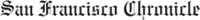 |
|
Reel Paradise
By TIM KNIGHT
There's trouble in Reel Paradise for indie film guru John Pierson and his family, the outspoken and volatile subjects of Steve James's engaging, warts-and-all documentary. The acclaimed director of Hoop Dreams trains his cameras on the frequently embattled Pierson clan during the last month of their yearlong stay on the remote Fiji island of Taveuni.
| |
|
Digital Nation at Movie City News
By Gary Dretzka
From a purely narrative perspective, it would have been convenient if the 180 Meridian Cinema, on the Fijian island of Taveuni, had more in common with the
Royal Theater, of Archer City, Texas...
| |
|
A Pierson-al journey, from Putnam to Fiji
By KEVIN CANFIELD
They seemed settled, after 11 years living in Garrison, so why would the Pierson family up and move to Fiji?
| |
|
The Flipside of Fiji
By Brent Simon
For his third feature-length documentary, Hoop Dreams creator Steve James was more than happy to focus on the picture-imperfect aspects of the tropical isle.
| |
|
Keeping It 'Reel' in Paradise
By ANDY KLEIN
In 2002, well known indie film figure John Pierson - producer's rep for She's Gotta Have It, Clerks, and Roger & Me, host of IFC's Split Screen series, and author of Spike, Mike, Slackers
& Dykes - picked up his family and moved to Fiji for a year to show free movies.
|  |
|
LA Weekly: Film
By Scott Foundas
The final month of Pierson's quixotic quest is chronicled by documentary filmmaker Steve James in Reel Paradise and the result is an enormously warm, comic travelogue about how you can go to the ends of the earth and still not escape from temperamental
teenagers, absentee landlords and the universal language of moving pictures.
| |
|
Creating a Free Cinema Off Beaten Track in Fiji
By STEPHEN HOLDEN
Steve James's absorbing documentary follows a family to the rural Fijian island of Taveuni, where they showed free movies in the world's most remote movie theater.
| |
|
Box Office Magazine
By Francesca Dinglasan
The camera turns to the frontlines of movie magic -- namely exhibition -- in Steve James' engaging documentary "Reel Paradise," which follows the story of cinema operator John Pierson and his family during their final month of a yearlong sojourn in Taveuni, one of Fiji's most remote islands.
| |
|
TV Guide's Movie Guide
By Ken Fox
Survivor meets CINEMA PARADISO in this wonderfully entertaining documentary about a film fanatic's quest to bring Hollywood movies to a remote South Sea island.
| |
|
Film Threat
by Jeremy Mathews
Steve James's "Reel Paradise" is an honest look at the experience of a family who lives a yearlong tropical movie adventure on a remote island in Fiji.
| |
|
Film Forward
by Kent Turner
Former indie film representative and author John Pierson (Spike, Mike, Slackers & Dykes) takes his family to the Southwest Pacific island of Taveuni to run a movie theater in one of the most remote corners of the world.
| |
|
Time Out New York
by Joshua Rothkopf
The squat by handsome 180 Meridian Cinema pokes out of a clearing of South Pacific jungle like some bizarre hallucination...
| |
|
The Onion A.V. Club
by Noel Murray
Reel Paradise catches indie film entrepreneur John Pierson toward the tail end of his yearlong residence on a Fijian island, where he bought a theater and ran a nightly program of free moviesÑmostly recent Hollywood fare with a few classics and indies mixed in.
| |
|
PG-Fiji: A Pacific Whim Leads to a Remote Movie Theater
by Anthony Kaufman
Reel Paradise catches indie film entrepreneur John Pierson toward the tail end of his yearlong residence on a Fijian island, where he bought a theater and ran a nightly program of free moviesÑmostly recent Hollywood fare with a few classics and indies mixed in.
| |
|
AM New York
by Mina Hochberg
Ex-New Yorker John Pierson is a serious film buff. In 2002, he moved his family to Fiji for a year to run a free theater on an island where movie outings are a luxury.
| |
|
'Paradise' found in Fiji
By LILY OEI
Indiewood came out in droves Monday to celebrate the Gotham preem of Wellspring's "Reel Paradise."
| |
|
A Cinema So Indie It's 5,000 Miles Away
By DAVID HOCHMAN
The Pierson's experiences running a cinema in Fiji are the subject of the documentary "Reel Paradise."
| |
|
Reel Paradise - Review
By John DeFore
Storied producer's rep John Pierson (who told his stories in his book "Spike, Mike, Slackers and Dykes") is a charismatic draw for a certain kind of moviegoer -- the indie-centric fan who marvels at the many filmmaking talents he has brought to light. Fortunately
for the docu in which he stars, "Reel Paradise" has a broader appeal.
|
|
|
On Screen and In a New City, Austin Embraces The Pierson Family
By Eugene Hernandez
These days, aside from traveling to a few film festivals to talk about Steve James' Miramax doc about their time in Fiji, "Reel Paradise,"
the Pierson's have become key figures within the Austin film scene.
|
|
|
Variety - Reel Paradise
By Todd McCarthy
Indie film guru John Pierson goes native, sort of, in "Reel Paradise," an engaging docu about his year-long
stint showing free movies to the locals at what's purportedly
the world's most remote cinema, the 180 Meridian in Taveuni, Fiji.
|
|
|
Sundance #3: Of heart and humor
By Roger Ebert
Another Sundance doc is also a wonderful portrait of an unexpected lifetime. Steve James, who directed
"Hoop Dreams," is here with "Reel Paradise," the story of a New Yorker named John Pierson, who distributed
and represented the films of Spike Lee, Kevin Smith and many other indie directors,
and hosted "Split Screen," an IFC program on independent films.
|
|
|
Sundance Daily Insider
By Jeff Hanson
After a recent screening, James and the
Pierson family joined in an insightful Q&A.
|
|
|
| Photos from the 2005 Sundance Film Festival
Check out photos from the 2005 Sundance Film Festival as taken by Roger Ebert, Brian Brooks and Matt Dentler.
|
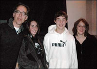 |
|
Paradise Found
By Bill Chambers
Hoop-dream master Steve James on his latest film, REEL PARADISE. A interview from Film
Freaks Central.
|
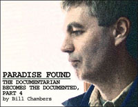 |
|
Isle of Forgotten Fans
By John Pierson
I recently became the proud owner of the world's most remote movie theater. A year from now, you could be wearing a T-shirt that says, "I saw it at the 180 Meridian Cinema." At least that's how I see it.
| 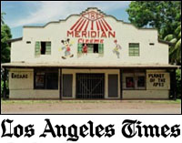 |
|
Fiji Favorites: Guys in Dresses
By Dave Kehr
The Piersons are back, and the New York independent film community is happy to see them home.
| 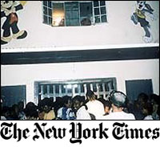 |
|
Showing free movies in Fiji: Is he an ugly American?
By John Pierson
Showtime. Saturday night. As I stood in the funky lobby of Fiji's 180 Meridian Cinema, Vin ("XXX") Diesel coolly played
his "new breed of secret agent" to a full house inside. I was not cool. I was squirming because I actually thought
I might go to jail for refusing to charge admission at my theater.
| 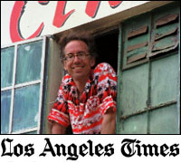 |
|
|
Ten Stellar Cinemas
Res Magazine includes the 180 Meridian Cinema as one of their Ten Stellar Cinemas.
| 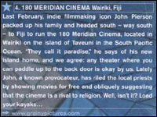 |
|
|
The Piersons: A Movie Honcho Moves His Family to Fiji
If Jennifer Lopez ever washes up on the beaches of Taveuni, Fiji, she'll find she has fans. "Everyone here loves J. Lo," says John Pierson, owner of the Meridian 180, the island's only movie theater.
| 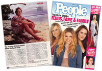 |
 |
|
|
Download the Reel Paradise Electronic Press Kit
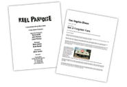
Download the Reel Paradise Electronic Press Kit and
High Resolution photographs suitable for print.
Download Here
|
{% include sidebar.html %}
|
|